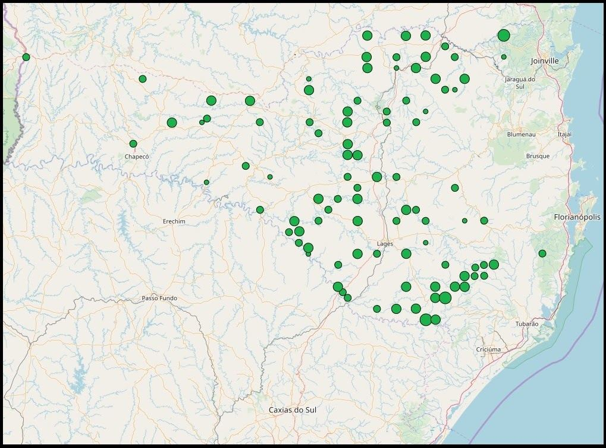
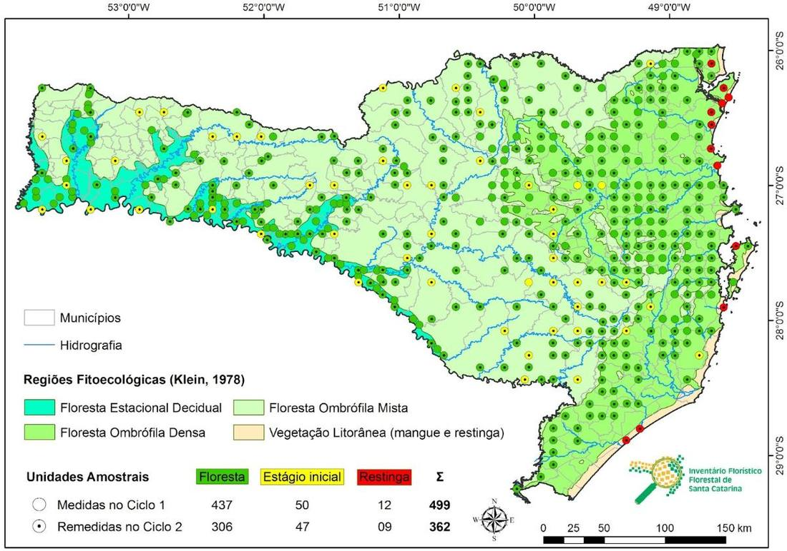

Mapas disponíveis:
➤ Download dos shapefiles: Solicite pelo email florestasc@furb.br ou cadastre-se em nossa Plataforma de Mapas
Mapa de Cobertura Florestal e Uso da Terra de Santa Catarina (MonitoraSC, 2020)

Consulte o mapa online e conheça a metodologia
➤ Download do shapefile/raster: via cadastro na Plataforma de Mapas ou solicitando pelo florestasc@furb.br
Acesse o artigo: MonitoraSC: um novo mapa de cobertura florestal e uso da terra do estado de Santa Catarina
Como citar?
Vibrans, A.C.; Nicoletti, A.L.; Liesenberg, V. et al. MonitoraSC: um novo mapa de cobertura florestal e uso da terra do estado de Santa Catarina. Agropecuária Catarinense, v. 34, p. 42-48, 2021.
Mapa de Áreas potenciais e remanescentes de Restinga de Santa Catarina

➤ Download do shapefile: via cadastro na Plataforma de Mapas ou solicitando pelo florestasc@furb.br
Acesse o artigo: Mapeamento das Áreas Potenciais (originais) e Remanescentes de Restinga: uma proposta metodológica para Santa Catarina, Brasil
Nicoletti, A.N.; Vibrans, A.C.; Andrade, M.Y.; da Veiga, J.L.; Bizon, A.R.; da Silva, M.S.; Lingner, D.V.; Farias, T.L. Mapeamento das Áreas Potenciais (originais) e Remanescentes de Restinga: uma proposta metodológica para Santa Catarina, Brasil Revista Brasileira de Geografia Física, v. 17, n. 1, p. 260-280, 2024.
Mapas das Espécies Ameaçadas de Extinção de Santa Catarina

Mapa de Áreas Prioritárias para conservação das famílias chave da Mata Atlântica
Mais informações no artigo de Oliveira et al. (2021)
Oliveira, L.Z.; Gasper, A.L.; Vibrans, A.C. Potential new areas for conservation of key botanical families in the subtropical Atlantic Forest. Biodiverisity and Conservation, v. 30, p. 3903-3917, 2021.
Esta parte da página usa um recurso interativo do Google Sites que não pôde ser copiado. Ver no site atual ↗
Áreas prioritárias para conservação das famílias chave da Mata Atlântica - Fabaceae/Myrtaceae/Lauraceae, conforme estudo de Oliveira et al. (2021)
Resumo: As famílias botânicas Myrtaceae (guamirins), Lauraceae (canelas) e Fabaceae (leguminosas) são elementos florísticos essenciais da Mata Atlântica devido suas notáveis riquezas de espécies, níveis de endemismo e funções ecológicas. Diante disso, dados coletados pelo FlorestaSC foram analisados com o intuito de verificar se existem áreas com potencial para conservação com grande riqueza de espécies arbóreas/arbustivas dessas famílias. A estatística univariada local de Moran foi empregada considerando a riqueza de espécies dessas famílias por unidade amostral (UA). Seis agrupamentos de UAs foram encontrados na Floresta Ombrófila Densa (FOD) e na Floresta Ombrófila Mista (FOM); a maioria deles abriga mais da metade de todas as espécies dessas famílias observadas pelo FlorestaSC, além de muitas outras pertencentes a outras famílias. Um agrupamento de Myrtaceae e um agrupamento de Lauraceae na FOD foram os únicos que se sobrepuseram a Unidades de Conservação (UCs). Os agrupamentos de Lauraceae na FOM, localizados em zonas de ecótono com a FOD, apresentaram ∼50% de cobertura florestal nativa, enquanto os agrupamentos de Myrtaceae e Fabaceae apresentaram ∼10% de cobertura florestal.
Mapa de Localização das Unidades Amostrais do FlorestaSC

Clique aqui para acesso ao mapa detalhado da localização das Unidades Amostrais
Informações sobre cada Unidade Amostral podem ser consultadas aqui.
Mapas em formato shapefile
Na Plataforma de Mapas do FlorestaSC (https://monitora.furb.br/) são encontradas mais de 20 camadas (layers) do estado de Santa Catarina, em formato shapefile.
É possível realizar o download de grande parte destas camadas, mediante cadastro. Saiba como realizar o cadastro na plataforma de mapas por meio deste passo-a-passo.
Os shapefiles também podem ser solicitados através do email florestasc@furb.br.

Dentre as camadas disponíveis na plataforma, algumas foram produzidos pelo FlorestaSC:
- Mapa de Cobertura Florestal e Uso da Terra de Santa Catarina (shapefile e raster)
- Mapa de Áreas potenciais e remanescentes de Restinga de Santa Catarina (shapefile)
Na plataforma são fornecidas também camadas produzidas por outros órgãos como: Municípios (Seplan, 2013), Bacias Hidrográficas (SDM), Regiões Fitoecológicas (Klein, 1978), dentre outras.
Veja a lista completa de camadas na Plataforma de Mapas.
Mapas em formato .jpg
Clique aqui para consultar maiores informações sobre os mapas abaixo.
FlorestaSC
florestasc@furb.br 47 3221-6100
Página migrada de floresta.sc.gov.br.